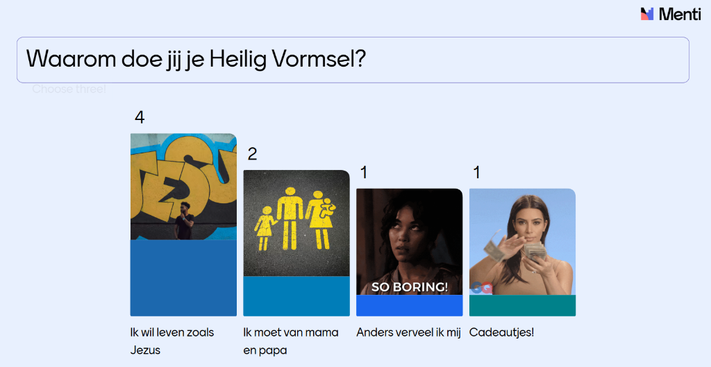
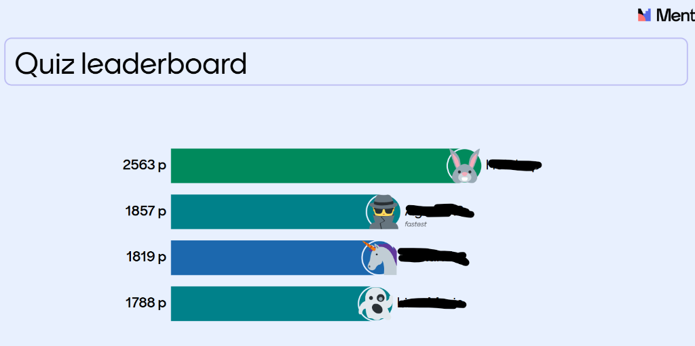
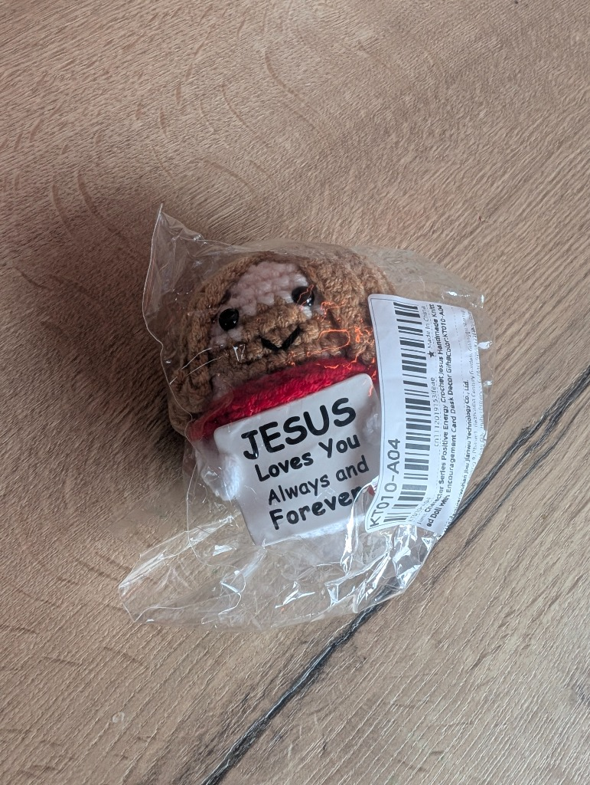

Catechese 1: Kennismaking en rondleiding in de kerk
Een warme start van ons nieuwe catechesejaar waarin we elkaar leerden kennen, op ontdekking gingen in de kerk en onszelf testten met een spannende Jezus Quiz.
Elkaar leren kennen en onze dromen delen
Vandaag stond onze allereerste catechese van het nieuwe werkjaar op het programma. We begonnen met een fijne kennismakingsronde waarin iedereen vertelde wat we super leuk vinden en wat we absoluut niet leuk vinden. Daarnaast deelden we onze dromen voor later en spraken we over de vraag waarom we ons Heilig Vormsel willen doen.
Via een interactieve Menti-test konden onze kandidaat-vormelingen aangeven waarom zij voor het vormsel kiezen. Tot onze grote vreugde was Jezus volgen ("Ik wil leven zoals Jezus") het topantwoord! Dit maakt ons als catechisten natuurlijk ontzettend blij en fier, maar ook de andere eerlijke antwoorden snappen we helemaal ;)!

De resultaten van onze Menti-vraag: "Waarom doe jij je Heilig Vormsel?"
Op ontdekking in de kerk en bijzonder nieuws
Vervolgens gingen we samen rond in de Sint-Annakerk en ontdekten we wat er allemaal in een kerk te vinden is, zoals de doopvont. Daar hoorde meteen heel bijzonder nieuws bij: een van onze kandidaat-vormelingen zal tijdens onze catechese ook gedoopt worden! Super spannend en iets waar we met de hele groep enorm naar uitkijken.
Geconcentreerd aan het werk tijdens onze eerste bijeenkomst in de Sint-Annakerk.
De Jezus Quiz: proficiat Miss A!
Als afsluiter was het tijd voor de grote Jezus Quiz. Iedereen deed geweldig zijn best, maar Miss A stak er met kop en schouders bovenuit. Zij mocht als trotse winnares met het gehaakte Jezusje naar huis!

Het scorebord van de Jezus Quiz: iedereen deed goed mee, met een klinkende overwinning aan kop!

De hoofdprijs voor Miss A: het schattige Jezusje om mee naar huis te nemen.
Sfeerbeeld · Eucharistieviering
Een volle kerk bij onze eerste catechese
We hoopten bij de start van onze eerste catechese natuurlijk ook op een goedgevulde kerk tijdens de viering, en dat was helemaal het geval! Wat deed het deugd om zoveel vormelingen, ouders en parochianen samen te zien. We maakten er dit leuke filmpje van:
Samen in een volle Sint-Annakerk
Na onze eerste catechesebijeenkomst sloten we samen aan bij de eucharistieviering in de Sint-Annakerk. Onze hoop op een volle kerk ging prachtig in vervulling!
Aansluitend op de eucharistieviering gaven we aan de ouders uitleg over het verloop van het vormseltraject, de praktische afspraken en de planning. Wil je alles nog eens rustig nalezen? Bekijk dan hieronder de online presentatie: